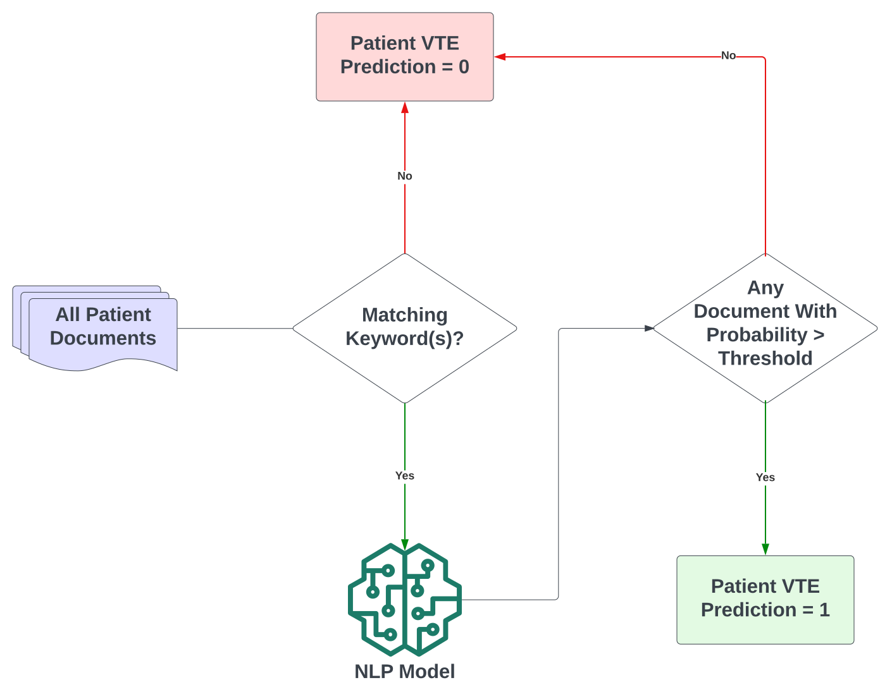
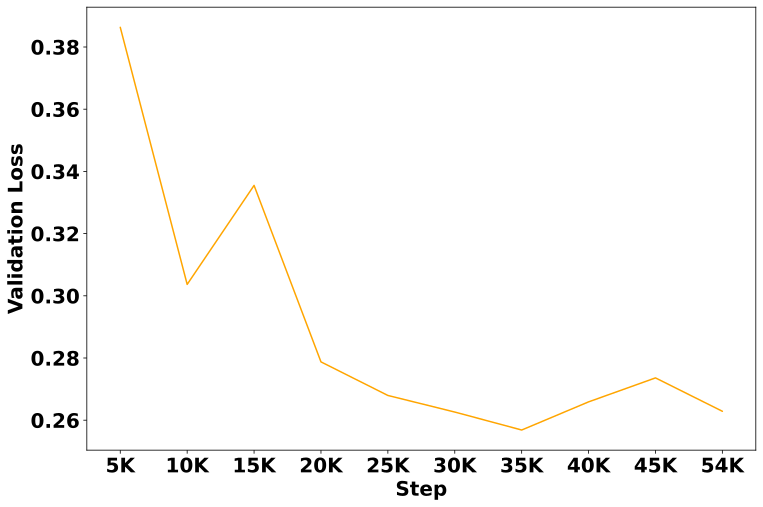
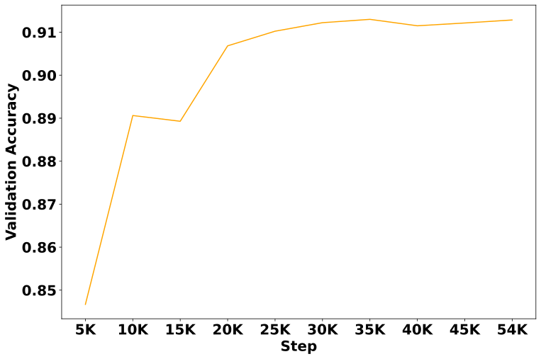
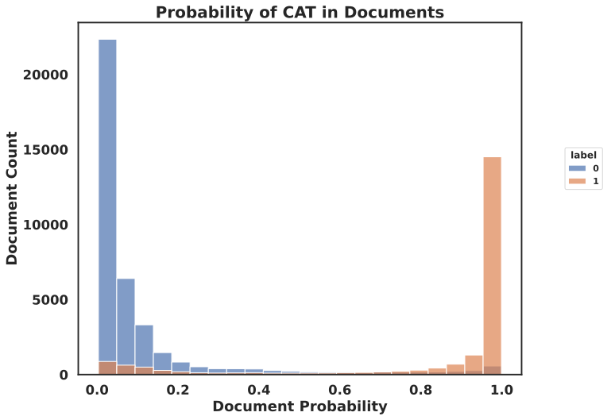
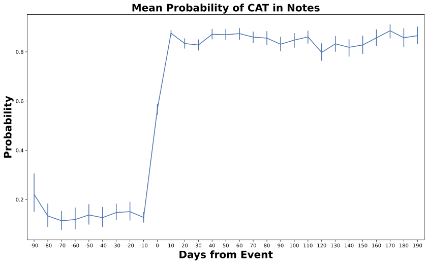
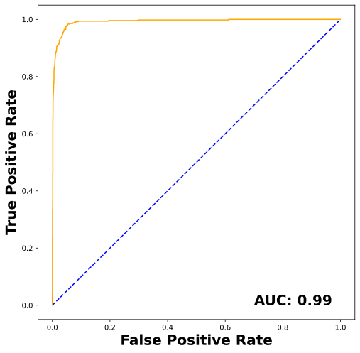
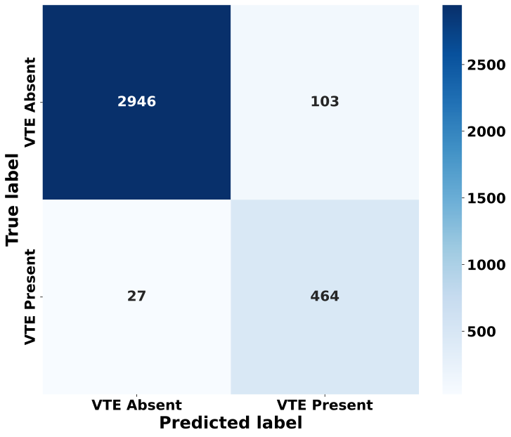

Introduction
The PINES package detects if a patient note came before or after the occurence of an event such as Deep Venous Thromboembolism. It uses Large Language Models (LLMs) to detect the events in clinical text and provide predicted probabilities.

Fig 1. Labeling Patient NotesDatasets
| Set | Patients | Notes |
|---|---|---|
| Training | 24,774 | 394,948 |
| Validation | 3,540 | 55,502 |
| Dev | 3,540 | 60,134 |
| Test | 3, 540 | - |
Training
A Longformer-4096 LLM model was fine-tuned on the training dataset of 394,948 notes. Sliding window attention of 512 (256 on each side) was used along with global attention on Venous Thromoboemolism related keywords. The selected model had the best loss on the validation set.
# Create a ModelCheckpoint callback
checkpoint_callback = ModelCheckpoint(
monitor='val_loss',
dirpath='train_steps',
filename='longformer-model-{epoch:02d}-{val_loss:.2f}',
save_top_k=3,
mode='min',
)
# training
trainer = pl.Trainer(enable_checkpointing=checkpoint,
accelerator='gpu',
devices=devices,
max_epochs=epochs,
precision=16,
strategy="ddp_spawn",
default_root_dir="./train-final-1",
callbacks=[checkpoint_callback],
val_check_interval=5000
)
trainer.fit(model, train_dataloader, val_dataloader)
Training Code (Pytorch Lightning)

Fig 2. Validation Loss
Fig 3. Validation AccuracyResults
The fine_tuned model was used to predict the probability of the unseen notes in the DEV set.

Fig 4. Predicted probabilities of notes with true labelsWith the predicted probabilities of notes per patient, the date of Venous Thromboembolism was predicted using Maximum Likelihood.

Fig 5. Difference between estimated and predicted datesAt a patient level, the following metrics were obseved with cutoff probability of 0.955
| Metrics | Value |
|---|---|
| Accuracy | 0.96 (0.96 - 0.97) |
| Precision | 0.82 (0.79 - 0.85) |
| Recall | 0.95 (0.92 - 0.96) |
| Specificity | 0.97 (0.96 - 0.97) |

Fig 6. ROC for predicting patients with VTE

Fig 7. Confusion Matrix for predicting patients with VTE